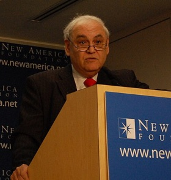
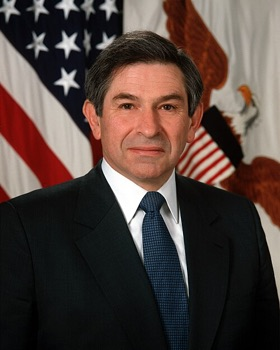
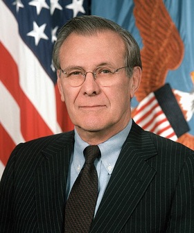
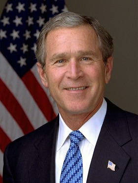
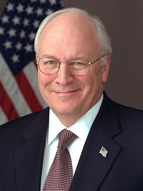

伊拉克战争背后：谁和谁有关系，证据说到哪一步
美国新保守派、以色列右翼和 2003 年伊拉克战争之间，常被说成「一条指挥链」。这篇把公开证据逐条摊开：哪些关系有白纸黑字，哪些只是合理推论，哪些根本没有证据。
想先看故事、再看证据：看故事看板：一场战争的七年前奏 →
下一篇：《圣经》怎样进入以色列和美国的中东政治 →
一句话结论：一批美国政策人物 1990 年代就公开主张推翻萨达姆，其中几位也参与过给以色列写的战略建议，后来他们进了小布什政府。这是有文件可查的人员与思想重叠。但「以色列下令 → 新保守派执行 → 美国被操控」这条指挥链，公开证据支撑不了。
先说怎么读这张图。证据分三种强度，全文都用同一套颜色：
关系网：文件 → 人 → 职位 → 决策
点一下人物或方框，只看它的连线；再点一次恢复。手机上可以左右滑动看全图。
这张图想说明两件事。第一，中间这一列人确实把三样东西串了起来：1996 年给以色列的建议、1998 年的美国倒萨倡议、2001 年后的政府职位，每一条绿线都有文件可查。第二，从「职位」到「开战决定」是黄线：他们在决策圈里，也在推动，但最后拍板的是总统和他的核心团队，影响有多大量化不了。而最上面那条红线，是网上最常见、却最没有证据的说法。
图上的人

Richard Perle
唯一同时连上三处的人。在布什政府里没有正式行政职务，2001–03 年任国防政策委员会（咨询机构）主席，2003 年 3 月因利益冲突争议辞去主席。
Douglas Feith
2001–05 年主管国防部政策。他的办公室做过和情报界共识不一致的「另类情报评估」，2007 年国防部监察长认定这种做法不恰当、但不违法。
David Wurmser
先任 Bolton 在国务院的特别助理，2003–07 年任切尼的中东顾问。（没有找到授权清楚的照片，这里用首字母代替。）

Paul Wolfowitz
2001–05 年任国防部副部长，9·11 之前就属于对伊拉克强硬的一派。他不是 Clean Break 的作者。

Donald Rumsfeld
两封 1998 年公开信都有他的名字，后来成为主持伊拉克战争的国防部长。
John Bolton
2001–05 年在国务院主管军控与国际安全。照片摄于 2023 年。
Elliott Abrams
2002 年底起在白宫国家安全委员会负责近东与北非事务。
William Kristol
1998 年 1 月给克林顿的传真由他代表 PNAC 发出。没有担任政府职务，影响来自智库、刊物和公开论述。
Robert Kagan
和 Kristol 一起推动更积极的美国全球战略。同样没有政府职务。
Benjamin Netanyahu
报告是写给他刚上台的政府的，但从未被以色列政府正式采纳。「写给他」不等于「他指挥了美国」。照片摄于 2023 年。

George W. Bush
以「大规模杀伤性武器」和「与恐怖组织的关系」为主要公开理由，2003 年 3 月下令开战。

Dick Cheney
布什决策圈的核心人物之一。1998 年的公开信上没有他的名字。
时间线
- 1991海湾战争，之后联合国制裁和武器核查，美国早就在对付萨达姆。
- 1996Perle 带领的研究组写成《A Clean Break》，写给内塔尼亚胡，提到把萨达姆赶下台是「重要的战略目标」。
- 1998-01PNAC 传真克林顿，要求美国政策以推翻萨达姆为目标。
- 1998-05PNAC 再写信给国会领袖 Gingrich 和 Lott，签名者包括 Rumsfeld、Wolfowitz、Bolton、Abrams、Perle、Kristol、Kagan 等。
- 1998-10《伊拉克解放法》生效：支持推翻萨达姆政权，但明文不授权动用美军。
- 2001上述多人进入小布什政府。
- 2001-099·11 事件，原本就有的强硬路线获得政治窗口。
- 2003-03美国和盟军入侵伊拉克，推翻萨达姆政权。
- 20049·11 委员会报告、Duelfer 报告相继发布，开战理由被打折扣。
- 2007–08国防部监察长报告、参议院情报委员会第二阶段报告发布。
逐条核查
属实1996《A Clean Break》
由以色列智库 IASPS 的研究组撰写，Perle 领头，Feith、David Wurmser、Meyrav Wurmser 等人参与。报告写道：把萨达姆赶下台是「一个重要的战略目标」，可以借此压制叙利亚。补充：这份报告从未被以色列政府正式采纳。
属实1998 年两封 PNAC 公开信
克林顿总统图书馆确认：1998-01-26 PNAC 传真克林顿，要求以推翻萨达姆为美国政策目标（档案页只写发件人是 Kristol / PNAC）。同年 5 月 29 日的第二封信写给国会领袖，签名名单可查。注意：这是两封不同的信，常被混为一谈。
属实常被说过头1998《伊拉克解放法》
第 3 条：美国政策应当「支持推翻萨达姆政权，促进民主政府出现」。但第 8 条明写，这部法律不授权动用美军，只允许给反对派提供物资和训练。所以 1998 年定下的是「倒萨」这个目标，手段是扶持反对派，不是入侵。
属实9·11 委员会：伊拉克和基地组织
双方有过接触的报道，但委员会写道：「至今没有看到证据显示这些接触发展成了协同作战关系」，也没有证据显示伊拉克协助基地组织攻击美国。
属实大规模杀伤性武器
2004 年 Duelfer 报告：伊拉克 1991 年后已销毁库存，没有找到现存的 WMD 库存。2004–2011 年美军陆续发现约 5000 枚1991 年以前生产的废弃化学弹药，但这证明不了战前说的「现存 WMD 项目」。「过去用过」和「2003 年还有」是两回事。
属实国会与国防部的复盘
- 参议院情报委员会 2008 年第二阶段报告：政府一些公开说法「没有得到情报支持」，例如伊拉克与基地组织是伙伴关系、萨达姆准备把 WMD 交给恐怖分子。报告以 10 比 5 通过，部分共和党委员批评它有政治动机。
- 国防部监察长 2007 年报告：Feith 的办公室制作「另类情报评估」，结论与情报界共识不一致，并送给了高层决策者。结论是这种做法不恰当，但不违法。
属实不能扩大解读Lawrence Franklin 案
美国司法部 2005 年公告：国防部伊朗科分析员 Franklin 被控把机密国防信息泄露给无权接收的人。他 2006 年认罪，被判约 12.5 年；2009 年两名 AIPAC 前游说人员被检方撤诉，他的刑期随后大幅减为缓刑。这是一桩真实的个案，不能用来证明整个新保守派网络是间谍网。
哪些结论站得住
| 说法 | 强度 | 理由 |
|---|---|---|
| 90 年代就有美国人公开推动推翻萨达姆，其中一些人后来进了布什政府 | 强 | 两封公开信、法律条文、官方履历都对得上。 |
| 美国新保守派和以色列右翼的安全政策讨论有人员和思想交集 | 强 | 《A Clean Break》的作者名单就是直接证据。 |
| 这个网络对布什的伊拉克政策有重要影响 | 推论 | Feith 办公室推动偏向开战的情报解读，让推论更有分量，但影响有多大量化不了。 |
| 战前的公开说法和后来的调查结果有重要落差 | 强 | 参议院、9·11 委员会、Duelfer 报告、国防部监察长四方面都指向这一点。 |
| 以色列下令 → 新保守派执行 → 布什被控制 → 开战 | 不足 | 没有任何命令、会议记录或服从关系的公开证据；《A Clean Break》连以色列政府都没采纳。 |
| 「犹太人控制美国」 | 不成立 | 把少数具体人物的政治行为扩大成对整个族群的指控，逻辑不通，也是典型的反犹叙事。 |
换个角度想一想
如果没有以色列右翼这层关系呢？美国自己就有一条很长的倒萨轨迹：1991 年海湾战争、制裁、联合国武器核查、克林顿时期的空袭、1998 年的法律。所以以色列因素不是美国反萨达姆的必要条件。
如果没有新保守派这批人呢？没法知道 2003 年会不会以同样方式开战。这批人准备了多年的人手、论述和政权更替方案，是重要变量，但没有可靠的方法给它算一个「战争原因占百分之几」。
最稳妥的解释：美国自身的战略利益，加上 90 年代累积的倒萨政策、新保守派政策网络、和以色列右翼的部分立场重合、9·11 的冲击、布什和切尼和拉姆斯菲尔德的决策，再加上战前情报失误和选择性呈现，一起导致了 2003 年的战争。
人员重叠是事实，指挥链是想象。分清这两件事，才看得清这场战争真正的来路。
来源
- Clinton Presidential Library — PNAC 档案说明
- PNAC 1998-05-29 致 Gingrich / Lott 信（GlobalSecurity 镜像）
- Iraq Liberation Act, Public Law 105-338
- DoD Historical Office — Paul Wolfowitz
- U.S. DOJ 2005 — Lawrence Franklin 案公告 · Washington Post 2009 — 减刑
- 9/11 Commission Report, Chapter 2
- Senate Intelligence Committee — Phase II（2008） · Arms Control Association 摘要
- CS Monitor 2007 — 国防部监察长报告 · FAS — 报告解密
- Arms Control Association — Duelfer 报告 · NPR 2014 — 旧化学弹药
- Bush White House Archive — 2003 国情咨文
- A Clean Break（背景索引） · NPR 2003 — Perle 辞任主席
照片来源
全部来自 Wikimedia Commons，已缩小尺寸。美国政府官方照片属于公有领域：Feith、Wolfowitz、Rumsfeld（Scott Davis, U.S. Army）、Bush（Eric Draper, White House）、Cheney（White House / U.S. Air Force）。萨达姆照片（Iraqi News Agency, 1998）在 Commons 标为公有领域。其余照片按授权署名：Richard Perle — New America，CC BY 2.0；William Kristol — Gage Skidmore，CC BY-SA 3.0；Robert Kagan — Mariusz Kubik，CC BY 3.0；Benjamin Netanyahu — Avi Ohayon / 以色列政府新闻办公室，CC BY-SA 3.0；John Bolton — 中华民国总统府，CC BY 2.0；Elliott Abrams — Council on Foreign Relations，CC BY-SA 4.0。本页是公开资料的整理与核查，不代表对任何人物的立场评价。
说明：参议院情报委员会网站拒绝了自动抓取，那部分内容通过搜索摘要和二手报道核对，没有逐字读原报告。